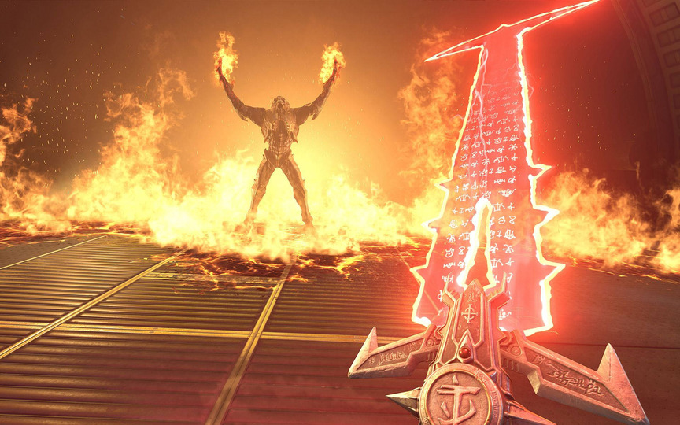

Doom Eternal

Game Details
- Release year: 2020
- Genre: First Person Shooter
- Platforms : PlayStation 4, Stadia, Windows, Xbox One, Nintendo Switch, PlayStation 5, Xbox Series X/S
- Developer : id Software
An evolution for the FPS genre
Doom Eternal is what happens if you combine an action game with deep mechanics, a to-notch shooting system, great movement and music straight from Hell.
Every arena is designed to become a deadly dance where movement is just as important as aiming.
Execution, positioning, and timing are fundamental parts of the core gameplay.
Just like the original Doom, Doom Eternal has inspired many modern games with its philosophy: make the player feel unstoppable.
This game is pure Adrenaline.